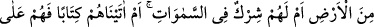
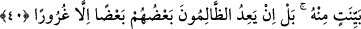
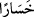

“inkâr ederse,” yâni nankörlük yapar; kendisini halîfe yapanın ahkâmına boyun eğmez,
nefis ve hevâsına uyarsa “inkârı”nın vebâli ve cezası -ki kovulmak, lânetlenmek ve
cehennem gibi hususlardır - başkasına değil, kendi aleyhinedir; “kendi zararınadır.
Kâfirlerin küfrü, Rableri katında kendileri için ancak gazabı arttırır. Kâfirlerin
küfrü, kendilerine ziyandan başka bir şey getirmez.”
Râğıb der ki: “ kelimesi, çirkin bir işi yapanı görenin o kişiye olan aşırı öfke ve
tepkisini ifâde eder. Yâni onların küfrünün neticesi değildir; ancak ebedî gazaba sebep
olabilecek rabbânî buğzdur. Burada cümlenin tekrar edilmesi ziyâde takrir ve beyan
içindir. Ayrıca şuna da tenbih edilmektedir ki bu vahim ve çirkin olan gazap ve ziyandan
her biri müstakillen ve asâleten küfrün gereğidir. “ ve “ kelimelerinin nekre
oluşları işin vehametini göstermek içindir. Yâni küfrün muktezâsı öyle bir gazaptır ki
ondan öte rezillik rüsvaylık ve aşağılık olamaz. Yine küfrün muktezâsı öyle bir hüsran
ve ziyândır ki ondan öte bir şer, kötülük ve helâk olamaz, demektir.
40. De ki: Allah’ı bırakıp da taptığınız, ortaklarınızı gördünüz mü? Gösterin
bana! Onlar yerdeki hangi şeyi yarattılar! Yoksa onların göklerde mi bir
ortaklıkları var! Yahut biz onlara, (bu hususta) bir kitap mı verdik de onlar, o
kitaptaki bir delile dayanıyorlar? Hayır! O zâlimler birbirlerine, aldatmadan başka
bir şey vâdetmiyorlar.
Onları susturmak için “De ki: Allah’ı bırakıp da taptığınız, ortaklarınızı” ilâh ve
putlarınızı “gördünüz mü?”
Allah Teâlâ burada “benim ortaklarım” buyurmamış “sizin ortaklarınız” buyurarak
ortaklığı onlara nispet etmiştir. Çünkü onlar hiçbir asıl, delil ve gerekçe olmaksızın
putları Allah’a ortak koşmuşlar ve bunların gerçekten Allah’ın ortakları olduğuna
inanmışlardır.
“Gösterin bana! Onlar yerdeki hangi şeyi yarattılar!” Zira görmek ve bilmek haber
vermenin sebebidir. Bundan dolayı “göstermek”, “haber vermek” yerinde kullanılmıştır.
Sanki “Ortaklarınızı bana haber verin ve onları bana gösterin” buyrulmuştur. Yâni “sizin
Allah’a ortak koştuklarınız, O’nun yarattıklarının dışında yeryüzünde hangi şeyi
yaratmışlardır? Veya bu ortaklarınız dünyada ne yaratmışlar? Buradaki soru olumsuzluk
ve inkâr sorusudur. Böyle bir şeyin mümkün olmadığını ifâde etmektedir.
“Yoksa onların göklerde mi” göklerin yaratılışında mı Allah ile “bir ortaklıkları
var!” da bununla zât-ı ülûhiyete hak kazanmış olsunlar. “Yahut biz onlara,”